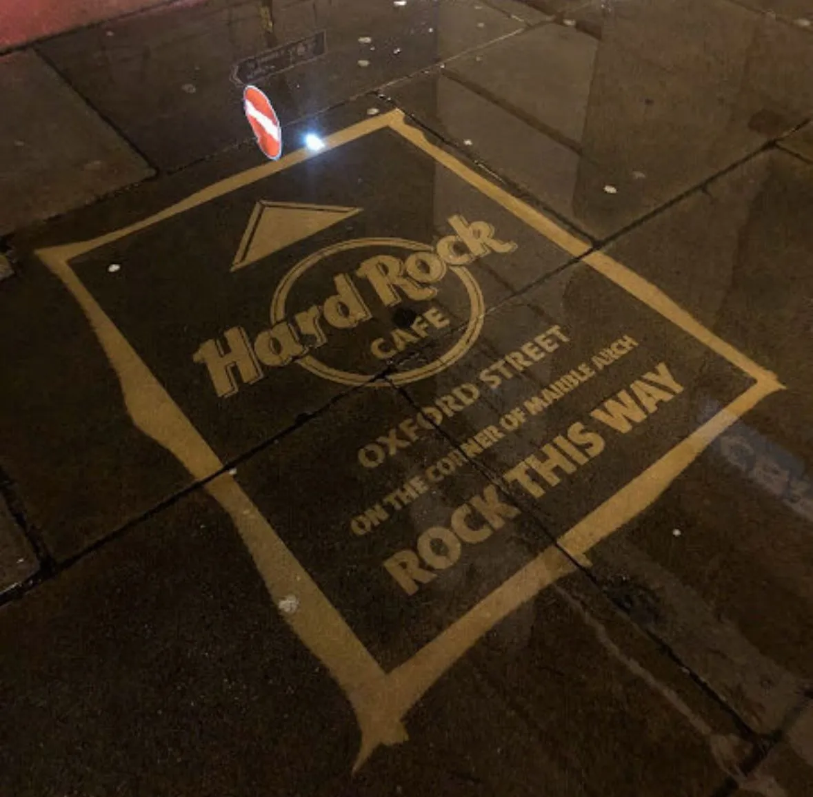

How reverse graffiti turns cleaning into advertising
Originally posted on LinkedIn, March 18, 2025.
Reverse graffiti is advertising that no police force can stop. Brands found a simple trick: advertise without paint, glue, or anything illegal. Instead of spraying walls, they clean the dirt.
They place a stencil on a dirty sidewalk and run a pressure washer over it. When they lift the stencil, the clean section forms a logo while the surrounding pavement stays dirty. It is not really graffiti. It is cleaning.
When Leeds City Council tried to stop it, officials realized the only option was to outlaw street cleaning. That was not exactly practical.
Nike, Puma, and Hard Rock Cafe have all used it. Placing 25 ads across a city costs $1,600. The same amount would buy one billboard for one month.
The results can be significant. When ING Bank used reverse graffiti in Belgium, it sold 5,212 mortgages in one week and reported an 800% return on investment.
The whole idea started with people writing “Clean me” on dusty cars.
